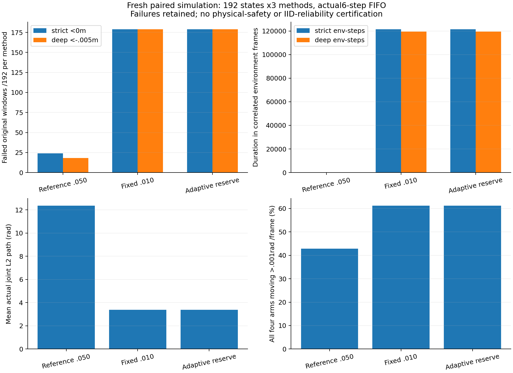

完整结果与运动代价
严格：原始非豁免距离 < 0；深度：< −5 mm。持续时间按环境帧计数，不能当作独立事件或实机可靠性。实际关节路径用于观察运动代价。

四类原始几何失败
同一窗口可以同时涉及多类几何违规，分类计数不能直接相加为总窗口数。
全部 192 个配对案例
颜色表示原参考与自适应候选的变化：绿色救回，红色新增失败，棕色均失败，蓝色均无失败。
保存每四帧曲线，并额外保留终点、各类最小距离、首次负距离及执行量峰值。完整逐帧数据保存在 NAS 封存档案中；抽样曲线不替代逐帧计分。
实际覆盖和相遇暴露
十区间边际关节计数和 10 cm 末端体素来自实际状态。六组臂对各 24 个条件初态，加 48 个全局初态；不等于完整 26 维可达空间或全部动力学条件。
每张真实图像绑定它自己的状态
每组九个原始 1280×720 视角：总览、正面、背面、两机器人双臂与反向高低视角。检查实际 USD 相机和六个视锥平面；不宣称遮挡消除、全部网格轮廓覆盖或实机认证。
首次失败与约束可行性
零指令前缀：额外运动与早期失败
该诊断在观察到恶化后补充，属于探索性事后分析。保留原60帧前缀和全部窗口；不修改计分、分母或冻结候选。
九个固定时间点：全部初态的线性集合
每行192个配对初态；前态步骤0/60/62/66/71/75/180/480/959。固定采样不等于每帧可行性或完整非线性可达性。
可行性是保存的浮点线性集合的 HiGHS 诊断，不是物理安全或唯一因果证明。前六个目标不可撤销；当前发出的目标在第七个执行位置生效。
方法、复现与完整证据
候选只调整新目标的可达参考范围。风险估计取当前原始非豁免距离、六个实际待执行目标的冻结雅可比端点估计和当前速度的 18 步估计的最小余量；自适应范围为 0.01–0.05 rad。三方法共享原演员、目标风险行准入、有限求解器、物理阈值和六步 FIFO。
这是有明确盲测边界的探索性机制。冻结雅可比和速度预测不是保守边界；收紧参考范围不能使已经排队的动作立即停止。所有失败及无效窗口均保留。
完整逐案例结果（无损 gzip）